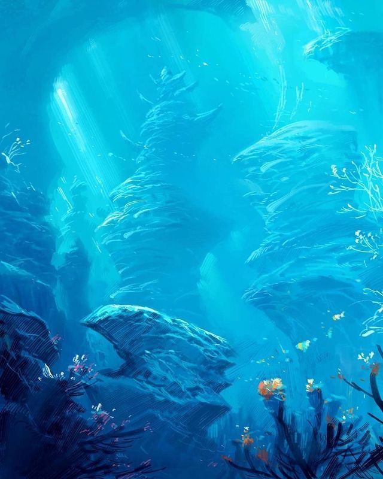
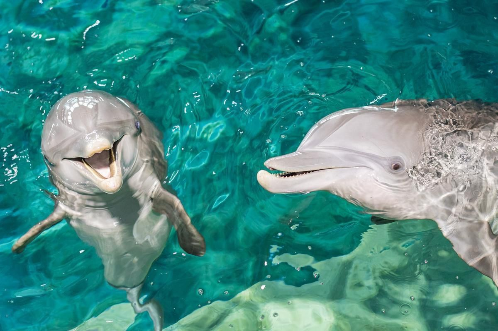
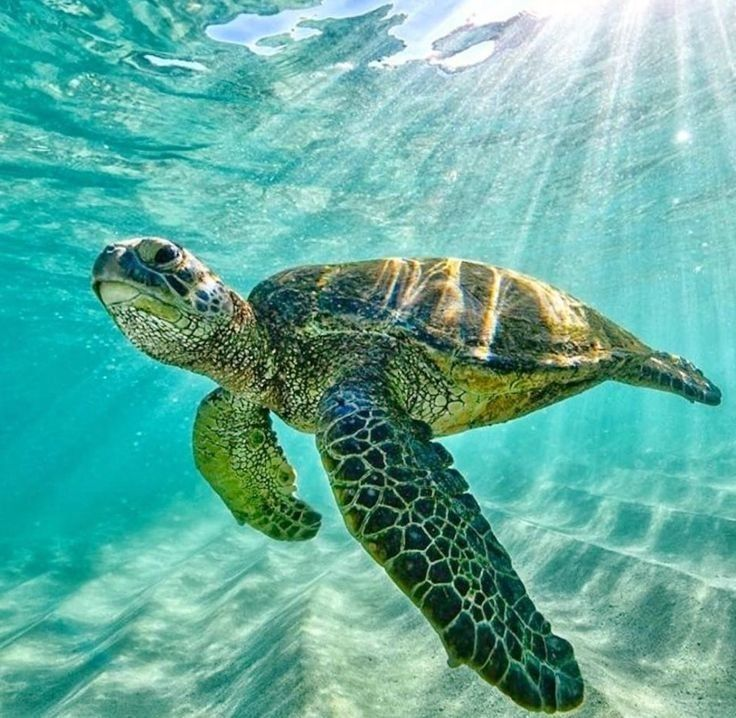
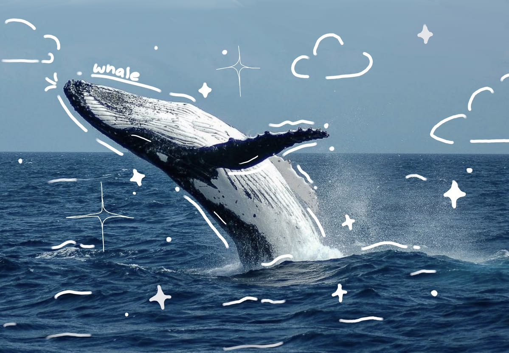

Descubre las especies que habitan en océanos, mares y ecosistemas acuáticos del planeta.

Los delfines son mamíferos marinos conocidos por su inteligencia y comunicación.

Las tortugas marinas recorren grandes distancias y forman parte de los ecosistemas oceánicos.

Las ballenas son algunos de los animales más grandes del planeta.